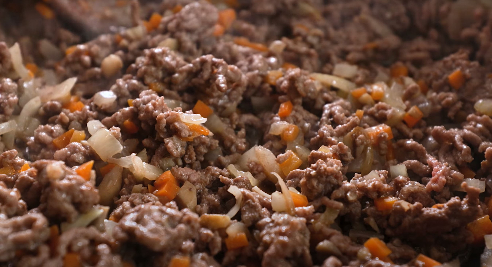

A delicious homemade lasagne with rich beef ragu, creamy béchamel and golden cheese topping. A comfort food classic.
Total time: 60 minutes Servings: 8Ingredients:
Preheat the oven to 220°C/ 200°C (fan)/ Gas 7. Peel and finely chop the brown onions. Top, tail, and finely dice the carrots. Heat a large, wide-based pan (preferably non-stick) with a drizzle of olive oil over a medium heat. Once hot, add the chopped onion and diced carrot with a generous pinch of salt and cook for 4 min or until softened.
Boil half a kettle, then peel and finely chop (or grate) the garlic. Once the onion and carrot have softened, add the beef mince to the pan and increase the heat to high. Cook for 3-4 min or until browned all over, breaking it up with a wooden spoon as you go.
Dissolve the beef stock mix, tomato paste, Henderson's Relish, dried oregano and a pinch of sugar in 250ml [450ml] boiled water – this is your tomato stock. Grate the cheddar cheese. Once the beef is browned, tear the chestnut mushrooms into the pan with your hands Add the chopped garlic and cook for 30 secs Add the tomato stock with a generous grind of black pepper and cook for 5-7 min or until thickened to a ragù-like consistency – this is your ragù.
Meanwhile, melt 20g [40g] butter in a pot over a medium heat. Once melted, add 20g [40g] flour and stir with a wooden spoon for 1 min or until a sandy paste forms – this is your roux.
Add 250ml [500ml] milk gradually and whisk for 5 min or until a smooth, thick sauce remains. Remove from the heat, season with salt and pepper and stir through half the cheese – this is your béchamel.
Layer some of the ragù over the bottom of an oven-proof dish, then top with 3 lasagne sheets, being careful not to overlap the pasta. Repeat this process until you end up with a final layer of lasagne sheets (you may need to layer differently depending on the size of your dish). Cover with the béchamel, top with the remaining grated cheese and cook in the oven for 30 min or until the pasta is cooked.